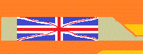

|  |
Ciekawe miejsca na świecie |
|
WitajCiekawe miejsce w AngliMiasto York w hrabstwie YorkshireJednym z najciekawszych miejsc w Anglii, jest miasto York w hrabstwie Yorkshire, u zbiegu rzek Ouse i Foss, znane głównie z bogatej historii. Powstało ponad 2 tys. lat temu i przez dłuższy okres było największym miastem w tej części Wielkiej Brytanii. W średniowiecznych budowlach przeplatają się ślady wikingów i Rzymian. Pierwsi zdobyli miasto w 866 roku i zajmowali je przez 200 lat. Dla Rzymian York był główną bazą militarną. W tym mieście zmarł cesarz Septymiusz Sewer, Konstancjusz I Chlorus – ojciec Konstantyna I Wielkiego, zaś sam Konstantyn został tu obwołany cesarzem.
© Strona została wykonana przez Mateusza Stanikowskiego |